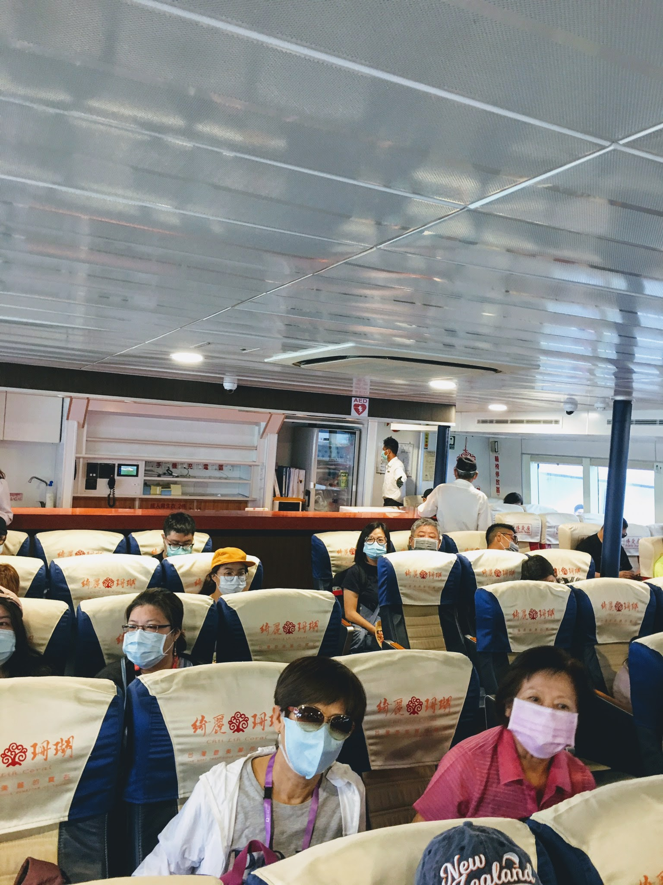

2020年8月30日-9月2日
谷歌相簿 40-Fong-Kimen2020
8/30日啟航：
2020年世界各國全球均在新冠疫情籠照下，旅遊成為被迫留在家中的防疫者，大家今年最大的奢望。旣然每年必須要去的國外旅遊，今年沒有辦法去了。台灣疫情相對安全情況下，國內及離島旅遊正在夯。金門、馬祖、澎湖等地區一時成為離島度假勝地的首選。搭乘飛機屬於密閉的空間，防疫較爲困難。遊輪是擁有相當開放的空間，安全性較高。應五十年同窗摯友玲霞家人的邀約，我們一行人十一人，其中三位年輕人，八位長輩一起出發，搭乘探索夢號遊輪，前往澎湖、金門作一日遊玩。連同上下船時間合計四天。
8月30日早上11時30分我們大夥分別搭乘兩輛租車，前往基隆碼頭會合。探索夢號郵輪在下午4時開船。通關上船手續還算簡單流暢。三位年輕人由於均有國外旅遊經驗，搜集大家的護照及登船証件，先行交給旅行社代辦者，辦理通關手續。我們隨即被引領到貴賓室等候。年輕人同行者有玲玲的女兒及女婿。淑娟的兒子。為擔心大家肚子餓，前往便利商店購買方便麵及飲料，真是貼心的服務。有年輕人作伴同行，這是第一次突然感受到升格當長輩，福氣真好。
在貴賓室內我們的管家已經前來為大家對上船的活動及服務作詳細的説明。服務相當周全。
下午四點郵輪準時開船。沿途基隆港港口風景呈現貨櫃碼頭，各種各樣的船隻，展現港口風貌。我們站在陽台上欣賞傍晚的風光。當天雖然聽說近日有颱風要來，但是港口沿途風平浪靜。雖然天上的烏雲密佈，仍不減出海港都沿岸風光的魅力。大家在遊輪陽台上東張西望，興奮雀躍之情溢於言表。
此次搭乘郵輪入住皇宮廳房型。有客廳、主臥房、更衣室、衛浴間、陽台。相當寬敞。屬於最頂層的貴賓享用。皇宮廰有專屬的皇宮餐廳、皇宮酒吧、皇宮專屬等候室。貴賓級享受。第一次搭乘遊輪入住豪華貴賓等級艙房，有些受寵若驚。感嘆有錢真好！
我個人曾經在美國、日本及國內有多次搭乘郵輪的經驗。但是，第一次享受皇宮等級住宿。此郵輪可以容納27,000人。〇噸位。與公主號相較雖然〇較小。但是皇宮豪華房艙的空間寬敞，且各項設施完備舒適。搭乘期間在郵輪上遇到雄獅旅遊的導遊、領隊們均移轉到郵輪上服務，以渡過疫情期間的淡季時光。也是旅行業輔導從業人員另行培訓，增加其他專長能力，及増裕收入減少損失的緊急應變措施。非常感佩台灣的緊急應變能力，也值得其他業者的學習。
8月31日（第一天）政煌弟在昨晚已經聯絡到澎湖同學〇君，在澎湖碼頭接船，帶我們到澎湖觀光景區遊玩。我第一次造訪澎湖，相當有新奇感。沿途風光有島上特色。隨處可見小港漁船，漁民生活。平日常吃常見澎湖海產，終於看到在海邊船上捕撈漁業海產的風貌。
由於澎湖島上潦濶僅有一日的旅遊行程，時間稍趕。在導遊兼司機〇君大哥引導下第一站來到白沙灣位於通樑村的大榕樹下，這顆大榕樹擁有95根以上的氣根支撐著，老榕樹在此已經扎根三百年以上的歷史，才形成眼前這片如此壯闊的畫面。這棵位於澎湖白沙鄉通樑村的古榕，是綠蔭最大的神木，與保安宮相互守護著澎湖這片海域。大夥大榕樹下，吃了仙人掌冰淇淋，也採買了特產，當然也趕拍了美照。
隨即前往知名景點澎湖跨海大橋。澎湖跨海大橋位於西嶼鄉。於1970年完工通車，連接白沙、西嶼兩島的跨海大橋，橫跨吼門水道，全程長2494公尺。半圓形拱門，為當時遠東最長的跨海大橋。我們一行人在此留下倩影。
中午在清心飲食店用餐，品嚐當地知名的海鮮料理。 海鮮非常新鮮美味好吃，紅蟳粥、炸大蝦、清蒸石斑、炒大蛤、酥炸魷魚腳、新鮮石蚵等。
店裡有上下樓，當天人數算蠻多的。從店裡牆壁上陳舊照片來看，應該是前總統蔣經國很喜歡的一家店。
前故總統蔣經國曾蒞臨用餐，並與老頭家呂酒瓶結為好友，致送雅名「九屏」，傳為一段佳話，牆壁上很多老闆與蔣經國先生往來書信的文物合照。
餐後隨即來到澎湖西嶼二崁聚落。時光彷彿在此凝結。咾咕石牆，一間間整理過的閩南式古厝，呈現眼前，有時光錯置的感覺。 走在玄武岩片鋪設的巷弄，隱約聽到四句成對的閔南語吟唱(褒歌)。
西嶼鄉二崁村在2001年，經內政部指定為國內第一個傳統聚落保存區。近年來完成修復的古厝交由當地村民組成的「二崁村聚落協進會」管理，發展成為具有在地文化特色的各項小型展覽館。走進聚落，可以看到一間間保存完整的古厝，被規劃成居民生活館、潮間帶館、社區博物館、漢藥館、童玩館、褒歌館等，相當有特色，也是瞭解澎湖居民生活、文化、建築的最佳範本。二崁村聚落於同年澎湖縣歷史建築票選中被選為澎湖縣歷史建築十景之一；又被選重為台灣歷史建築百景之一，排名第99名。
我們看到古厝完善如新的風貌，且發展成文創園區，提供商業契機。我們在古厝中流連忘返，喝到了杏仁茶，也採買了伴手禮。
途經風景綺麗藍天碧海海灘，又有矗立在海邊柱型玄武岩的特殊景觀，聞名已久的澎湖玄武岩自然保留區。區域內包含錠鉤嶼、雞善嶼及小白沙嶼3個無人島。主要的保育對象為當地特殊的玄武岩地形景觀。
澎湖群島是台灣三大火山群之一，除了花嶼之外，各島大多由玄武岩組成。火山熔岩在冷卻時體積收縮，形成玄武岩的柱狀節理，呈現六角柱或多角柱結構。
我們一行人在此拍攝了美照數張。人在玄武岩的雄偉景觀中，顕現人的渺小。
奎壁山與赤嶼之間的祕密海上道路。奎壁山摩西分海奇景是來到澎湖必看的奇景。
這兒有摩西分海的奇景，歸因於其特殊的地理與潮汐現象。大批遊客走向海中陸連島，景象壯觀、震撼眼界。自古，奎壁山就以「奎壁聯暉」名列澎湖舊八景之一。
我們到達時，未達潮汐時間，沒有見到分景現象，週遭景緻的視覺震撼，已經自感不虛此行了。
回到登船港口，沿途看到白沙灣沙灘美景盡收眼底，可惜因時間關係，僅能拍照，留下美好的記憶，自許一定要儘快回到外婆的澎湖灣。白沙灣美景是澎湖旅遊必遊的景點，尤其是年輕人的最愛。

趕回登船港口途中，沿途看到白沙灣沙灘美景盡收眼底，可惜因時間關係，僅能拍照，留下美好的記憶，自許一定要儘快回刻外婆的澎湖灣。白沙灣是澎湖旅遊必遊的景點。

在此特別感謝政煌弟弟的好友〇先生，在百忙中協助安排車輛及導遊。異地相逢熱情接待，無比感激與感謝。
遊玩一整天，大家超級想回到郵輪上，那兒有冷氣、美好的食物及飲料在等待著我們。歸心似箭回到天堂。正是大夥兒我們當時的心情寫照。
我們在下午5時登上渡輪，回到探索夢號郵輪。結束澎湖一日遊。雖然有些疲憊，但是對於初次遊澎湖的我來說，仍然充滿好奇非常熱愛這個美麗的小島。
在此特別感謝政煌弟弟的好友〇先生，在百忙中協助安排車輛及導遊。異地相逢熱情接待，無比感激與感謝。
遊玩一整天，大家超級想回到郵輪上，那兒有冷氣、美好的食物及飲料在等待著我們。歸心似箭回到天堂探索夢號郵輪上，正是大夥兒我們當時的心情寫照。
8月30日登船第一天晚宴，我們在絲路餐廳吃中式料理。味道還不錯，只可惜量較少。年輕朋友吃不飽。宵夜時又去皇宮餐廳享用炸雞及漢堡。
8月31日晚宴，我們特別安排吃鐡板燒。廚師在現場我們的面前烹炒料理。大部分人點的是牛排，少部分人點的是鮭魚料理。飲料部分大家均飲西瓜汁，玲霞建議點莫希托鷄尾酒。可惜餐廳提供的莫希托不道地。從此，每到一餐廳均必點，而每家調配方法不同，口味也不相同。皇宮餐廳提供的口感較為道地好喝。
註：莫希托是一種傳統的古巴高球雞尾酒。傳統上，莫希托是一種由五種材料製成的雞尾酒：淡蘭姆酒、白砂糖、青檸汁、蘇打水和薄荷。最原始的古巴配方是使用留蘭香或古巴島上常見的檸檬薄荷。萊姆與薄荷的清爽口味是為了與蘭姆酒的烈性相互補，同時也使得這種透明無色的調酒成為夏日的熱門飲料之一。這種調酒有著相對低的酒精含量。
年輕同行友人，吃不飽又另到皇宮廳，繼續吃龍蝦大餐及漢堡。
我們在專屬的皇宮游泳池畔，充滿了繽紛色彩的沙發椅上拍下大家美美的團體照片。留下豪華郵輪美麗的倩影。

此次旅遊行程最幸運的是適逢澎湖花火節。所以我們在遊輪上近距離觀賞煙火施放表演。五彩煙火在高空炫爛奪目，非常精彩。海上漂浮很多小船，遠遠望去，燈光閃爍，非常美麗的海景，都是去觀看花火煙火施放。在海上呈現難得一見的特殊景觀。此旅遊行程最大的賣點之一。
9月1日第二天前往金門行程。一大早7點30分在皇宮餐廳臨近靠窗的位子吃早餐。我們繼續點了西式料理。9點半出發搭乘大型接駁船（原小三通交通工具）僅有八分鐘就來到金門水頭小三通碼頭。
眼前在碼頭上迎賓者，舞龍舞獅表演，皇宮房艙貴賓有專人派員在碼頭上接船引導到遊覽車上。
註：金門縣府與地區觀光業者總動員，一早就在水頭小三通碼頭盛大迎賓，為了讓遊客可以快速踏上金門島上觀光，縣府協調小三通船商進行接駁，希望可以縮短接駁時間與提升旅客的舒適度，而一趟次可載運三百人，航程僅需八分鐘，故只要四趟次就載送完成，相比小船接駁方式大幅減短十七分鐘的時間。

我個人在職期間，曾因公差到金門多次。但時間久遠，印象中的金門具有戰地擁有許多戰備特色。與其他城鎮大不相同。此次來到看到的景觀已經大不相同了。各地建設進度，商業化程度高。可見縣政府相當努力。
第一站來到水頭聚落。據説水頭又名金水，位於金城鎮的西南隅，是個以黃姓為主的多姓聚落。因鄰近水頭碼口，早期即為金門與廈門之間的交通要點。
首先引導參觀的是金水國小。門面精美，刻畫著象徵純潔的天使，展翅高飛的老鷹；內部使用紅磚搭建圓柱，取諧音「專注」之意，每一處小細節都是對學子們的期待。
金水國小仿照傳統書院「回」字型的平面格局，也就是俗稱的番仔厝，在當時是全金門最新、最大的洋樓小學。
古厝許多建築物內可發現多樣的花磚。非常美麗。著名的閩式建築與洋樓匯聚在此形成聚落。水頭在過去是相當富有的聚落，保存的閩式建築與洋樓，是全島最多、最精美。金門有句俗諺稱「有水頭富，無水頭厝」。意思是即使能像水頭村人一樣富裕，但要擁有像水頭村那樣華麗的房舍卻不容易，代表著金門人賦予水頭聚落建築的讚譽。
金門地區多的是讓人趣味盎然的古厝聚落，今天到訪的水頭聚落，是其中的佼佼者。

看到古厝牆上掛有一座小燈。導遊告訴我們其用意在指引祖先回家的路。又看到窗戶上門框有很多柱條，可能是以前戰地防備炮火之用。
第二站來到金門最知名景點翟山坑道。走進翟山坑道幽暗的光線裡，鬼斧神工的軍事傑作就在眼前，坑道盡頭接引著深不見底的海水，在此炎熱的天氣中，迎面給我們帶來一些清涼。
翟山坑道內，既長叉寬闊的坑道及水道兩區域，是八二三砲戰期間，動員無數人力、耗費五年時間，才辛苦鑿出這條能夠容納42艘水道小艇進出、迴轉的極大的工程，被稱為「地下金門」傑作之一。
坑道外的草地上，陳列著各式登陸小艇以及防空武器。帶來全門曾經是戰地的軍事記憶，我們在此駐足留影。
註：翟山坑道，位於金門古崗村古崗湖東南方，為一A字型戰備水道。坑道全長101公尺，寬約6公尺，高約3.5公尺；水道呈A字形，全長357公尺，寬約11.5公尺，高約8公尺。1961年為因應戰爭所需而開挖，耗時5年才完成。戰時供登陸小艇搶灘運補用。坑內並有停靠碼頭。
翟山坑道內由人工穿鑿，工程雄偉媲美擎天廳。1998年7月正式開放，並成立翟山坑道管理站。
隨後冒著熱暑，趕往老街逛逛。有一些小店舖及菜市場等。
邱良功母節孝坊，建於1812年是旌表平寇大將邱良功之母貞孝守節的事蹟而設，現為一級古蹟。
在老街參觀並打算吃午餐。原本打算吃牛肉麵，可惜當時店家大排長龍。已經有7、8組人等候，𤔡恐延誤集合時間，改去便利商店，以輕食涼麵解決。老街小商店林立。但是若遇觀光客衆多時，可能接待不及，發展觀光尚有待加強。
參觀金門酒廠也是觀光客必經之地。只可惜當時天氣酷熱，且也累了，多數人已經不下車參觀了。
當天也參觀了清金門鎮總兵署所在地（原為叢青軒）。相傳是明萬曆辛丑年(西元1601)進士許獬讀書的地方。康熙年間，總兵陳龍考量舊金門城經歷明末多次兵禍，而后浦人丁興旺，於是將總兵署遷建於此，多次改建後成為現在規模，直到1915年金門設縣，總兵署為最高行政中心，現在是金門經典的觀光景點，也是縣定古蹟之一。
我們特地跑去後院參觀那棵參天的樹齡已逾數百的木棉樹。據說每逢春末夏初花期開著滿樹鮮豔的木棉花，總吸引大批攝影好手前來，以鮮豔的橙花，替總兵署增添意境。
為趕回郵輪喝下午茶，趕搭三點接駁輪船，回到天堂—探索夢號郵輪。喝完下午茶，等候吃晚餐日式料理。
日式料理沒有想像中的美味。匆忙又再回皇宮餐廳享受鲍魚及海鮮魚料。一行十一人痛快𣈱飲莫希托鷄尾酒飲料。微薰中大家嘻鬧開叭，好不快活。
我們在游泳池畔表演，由淑娟兒子掌鏡拍下大家活潑快樂的照片，留下難忘的回憶。
探索夢號郵輪澎湖、金門行四天三夜在驚奇連連，歡樂無比的心情下，劃下句點。此趟旅遊行程創下個人旅遊許多的第一。這是搭乘郵輪入住豪華皇宮成為頂級客層享受特別優惠的第一次。與摰友玲霞相識五十多年，參與家族手足同遊的第一次。感謝玲玲出資旅遊，並且全程安排，感恩無比。外婆的澎湖灣，藍藍天空，白色沙灘旅遊第一次。第一次全程戴著口罩旅遊。在世界各地飽受新冠疫情施虐下，有幸居住在台灣的我們，何其有幸能夠搭乘郵輪在台灣金門、澎湖離島全家遊玩。感恩上蒼的眷顧，人生七十才開始，掌握機會享樂人生。
三位年輕世代陪伴長輩出遊。貼心照顧，有你們真好。在茫茫大海中漂泊，躺在床上看海浪，數星星，天水一缐間，渡過白天黑夜，永生的懷念。我們曾經共有擁有的幸福回憶。